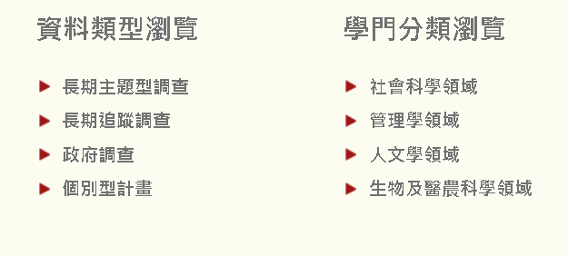

R for NGO
2023-08-21
Chapter 1 前言_關於本講義
講義的資料若有錯誤，再麻煩寄信告知修改 email: qbieqbiexyz@gmail.com
這份講義是希望讓原本沒有程式與或統計基礎的人，能夠在短時間初步了解R語言的簡單概念和操作，以及能夠進行初步的資料讀取、清理、分析與視覺化。
由於是初步介紹的入門講義，因此會簡單介紹一下R的基礎概念，但部分過於涉及程式設計的部分會稍微略過，重點會放在了解R的基礎概念、資料處理以及後續使用資料實作初步統計與視覺化部分
目的是讓讀者能夠輕鬆並短時間知道使用資料的好處，因此在分析或實作上，也不會涉及到深入的統計或視覺化，
若是在看過這份講義後對進階分析有興趣者，可以到以下所列參考書籍或資源，進一步學習。
1.1 R語言 應用性: 高、難度: 中高
R的好處在於免費、靈活，且有許多額外的套件輔助分析，若想要做的分析一般的套件沒有支援時，可以自寫函數或程式來處理，另外在統計方法與視覺化上面都有很多應用，且網路上有很多自學資源以及論壇解答遇到的問題。
缺點在於，由於R是由類似程式語言的方式執行，因此在學習上會比excel、spss、stata等統計軟體再困難一些，較接近python，因此學習坡度較高、需要學習程式語言，且一些新的外裝套件並沒有通過學術檢證、沒有售後服務。
1.3 參考資料
1.3.2 其他學習資源
- 其他進階R books
- 各種Cheatsheets
- base R cheat-sheet
- RPubs
- Posit
- 網路上的各種筆記或論壇
1.4 資料
開放資料(英語：Open data)指的是一種經過挑選與許可的資料。這種資料不受著作權、專利權，以及其他管理機制所限制，可以開放給社會公眾，任何人都可以自由出版使用，不論是要拿來出版或是做其他的運用都不加以限制。
1.4.1 政府公開資料相關資源
以下列出台灣部分的政府公開資料，下面列出的只是一小部分，還有很多其他政府或非政府的Open data可以自行探索
除台灣外，世界各國也有各自的Open data，可以用關鍵字自行查找，另外也有網站整理世界各地約2600以上的開放資料庫，可以按照地圖去查找
1.4.2 公開調查資料
另外也有一些「調查資料」可以免費提供申請下載使用，調查資料可能不像Open data一樣可以隨意使用，但多數公開的調查資料經申請後即可下載使用，
在台灣多數有公開的調查資料會被整理在「SRDA學術調查資料庫」當中，其中也包括政府每年的調查型資料，兩者都可以提供申請下載使用，但也需注意相關的參考格式/
若需要下載資料需要先加入會員，一般而言若不具有學術身分，也可以加入網路會員/
在youtube上也有SRDA頻道與一系列使用教學，若有需要可自行觀看

調查型資料的資源也非常豐富，SRDA也只是整理出部份台灣的調查資料，另外一些可能是放在該調查官網需自行下載，或是跨國型資料、國外的調查資料，有些可能須申請，有些是公開的，大多數都有問卷可以先查看是否有想要分析的題目再決定是否使用該資料，若有需要可以依需求自行搜索並下載
1.4.3 使用資料
講義有使用到的資料都可以從這裡下載